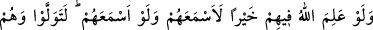
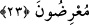

23. Allah onlarda bir hayır görseydi, elbette onlara işittirirdi. Fakat işittirseydi
bile yine onlar yüz çevirerek dönerlerdi.
“Allah onlarda” hayır cinsinden herhangi “bir hayır görseydi” ifâdesindeki bu
hayırlardan birisi de güçlerini hakkı araştırmaya hidâyete tâbi olmaya sarfetmeleridir.
“elbette onlara” düşünüp anlayacak şekilde “işittirirdi.” Böylece Peygamber’in
hakikatine vâkıf olup ona itâat eder ve inanırlardı. Fakat bu yönden tamamen boş
olmaları sebebiyle Allah onlarda hiçbir şey olmadığını bildiğinden, faydası olmayacağı
ve hikmete de uygun düşmeyeceği için onlara işittirmedi.
Şeyhzâde demiştir ki: “Onlarda hayrın olmaması, Allah’ın onlarda hayrın
mevcudiyetini bilmemesiyle ifade olunmuştur. Çünkü olan her şeyi Allah’ın bilmesi
gerekir. Allah’ın bir şeyin mevcudiyetini bilmemesi o şeyin bizzat yok olmasını
gerektirir. Onun için burada “Onlarda hayır olsaydı, Allah onlara işittirirdi.” denilmek
yerine “Allah onlarda bir hayır görseydi, elbette onlara işittirirdi.” buyurulmuştur.
Çünkü bu ifade, onlarda hayır olmadığına daha açık olarak delalet eder. Zira bir şeyin
kendisine dayandığı şeyi nefyetmek, neticede o şeyin bizzat kendisini nefyetmek
demektir. Bu, o şeyin bizzat kendisini nefyetmekten daha tesirlidir.
“Fakat” onlar hayırdan tamamıyla uzak iken Allah onlara anlayacak şekilde
“işittirseydi bile yine onlar” duydukları haktan “yüz çevirerek dönerlerdi.” ve asla
ondan istifade edemezlerdi. Ya da onu tasdik ettikten sonra irtidad ederler, böylece
sanki hiç işitmemiş gibi olurlardı. İnatları sebebiyle duydukları hakikatleri kabule
yanaşmaz, ondan yüz çevirirlerdi.
Burada şakî olacağı mukadder olan kimsenin durumuna da işaret vardır: Böyle bir
kimse, sülûk esnasında mürşide uymaktan vazgeçer, Allah’ı talebden yüz çevirir,
dünyaya ve onun süsüne yönelir.
Bilesin ki insan en güzel bir biçimde yaratılmıştır. Terbiye edilmek suretiyle mukarreb
meleklerin bile ulaşamayacağı bir olgunluğa erişebilecek kabiliyyettedir. O yaratılışının
başlangıcı itibariyle melekten aşağı, hayvandan yüksek bir mertebededir. Şerîatın
terbiyesiyle melekten üstün hâle gelerek bütün canlıların en hayırlısı olur. Şerîata
muhalefet edip nefsin arzularına uymakla ise hayvandan da alçak bir seviyeye düşerek
bütün canlıların en kötüsü olur. Dolayısıyla meleklerden bile hayırlı olması gereken bir
varlık hayvanların en kötüsü olur.
Akıllıya gereken Rasûlullah (s.a.v.)’in emrine ve şerîatına muhalefet etmemektir.
Hayvanlar bile O’nun emrine teslim olurken insanın teslim olmaması nasıl olur?
Bir seferinde Rasûlullah (s.a.v.)’e bir adam gelerek:
“Yâ Rasûlallah! Benim bir bahçem var. Kendimin ve ailemin geçimini oradan